Audit digitale toegankelijkheid van website onderzoeksraad.nl
Samenvatting
Wij hebben de website onderzoeksraad.nl onderzocht tussen 27 december 2025 en 10 januari 2026. Op dit moment zijn 26 van de 55 succescriteria als voldoende beoordeeld. In dit rapport lees je wat er bij de overige 26 nog fout gaat, en hoe je dat kunt verbeteren.
In dit onderzoek hebben we alle 55 toegankelijkheidseisen (succescriteria) uit de norm WCAG 2.2 onderzocht.
Deze audit is uitgevoerd conform de evaluatiemethode WCAG-EM. Deze methode is aanbevolen door DigiToegankelijk (Logius).
Subwebsite(s) waarbij de HTML en/of het systeem afwijkt van de onderzochte website
De van derden afkomstige inhoud (wettelijke uitzondering voor de overheid)
Kaarten en kaartapplicaties
Basisniveau toegankelijkheidsondersteuning
Mozilla Firefox, versie 142
Google Chrome, versie 142
Apple Safari, versie 18
PAC software to test PDF
NVDA schermlezer in combinatie met Firefox
VoiceOver schermlezer in combinatie met Safari
Andere gangbare browsers en hulpapparatuur
Technologieën van de website
HTML
CSS
JavaScript
WAI-ARIA
SVG
PDF
Over dit onderzoek
Leeswijzer
Onze rapporten zijn anders. Bij het bespreken van de gevonden problemen volgen wij niet de structuur van de norm, maar die van jouw website of app. Hierdoor kun je gewoon per pagina of scherm aan de slag gaan. Wel zo makkelijk! Je vindt verderop een overzicht van alle pagina’s met problemen.
We geven je bij elk gevonden issue een paar voorbeelden, maar niet een complete lijst. Controleer zelf of het probleem ook nog op andere plekken voorkomt. Zie het rapport als een leidraad.
Gebruikte norm
Dit onderzoek laat zien in hoeverre de website op dit moment voldoet aan WCAG 2.2, niveau A en AA. WCAG staat voor Web Content Accessibility Guidelines. Dit is de internationale norm voor digitale toegankelijkheid. De Europese norm EN 301 549 bevat alle eisen van WCAG op niveau A en AA.
In dit rapport hebben we korte beschrijvingen van de succescriteria uit de norm opgenomen, met een algemene uitleg erbij. Wil je ze helemaal lezen? Bekijk dan de documentatie van WCAG.
Gebruikte onderzoeksmethode
We gebruiken de onderzoeksmethode WCAG-EM van het W3C. Het proces ziet er als volgt uit:
vaststellen wat binnen en buiten scope valt
vaststellen welke technologieën zijn gebruikt
steekproef (sample) samenstellen
steekproef onderzoeken
gevonden issues beschrijven
Het grootste deel van het onderzoek doen we met de hand. Voor een deel van de toegankelijkheidseisen gebruiken we automatische tools als ondersteuning, zoals axe-core en Chrome Developer Tools.
Belangrijk om te weten
Dit rapport helpt je om de toegankelijkheid van je website te verbeteren. Maar let op: het is geen definitieve, volledige lijst van alle aanwezige toegankelijkheidsproblemen. Dat zit zo:
Het is een steekproef
Ten eerste is het onderzoek gebaseerd op een steekproef. Die is op een betrouwbare manier genomen, en de meeste problemen zullen daardoor zeker aan het licht komen. Toch kan een probleem net buiten de steekproef vallen. Bij een volgend onderzoek kan het wel ontdekt worden.
Op basis van falsificatie
We beoordelen vanuit het principe van falsificatie. Dat houdt in dat we proberen te bewijzen dat iets niet waar is, in plaats van te bevestigen dat het klopt. ‘Voldoet’ betekent daarom dat we geen reden hebben gevonden om een punt af te keuren. Maar als we later wél een reden vinden, kan het alsnog worden afgekeurd.
Voortschrijdend inzicht
Het komt voor dat de beoordeling van een succescriterium op detailniveau verandert. De norm beschrijft namelijk niet élk mogelijk scenario. Samen met andere onderzoeksbureaus overleggen we hoe we met bepaalde situaties omgaan. Zo kan iets dat nu wordt afgekeurd, soms bij een volgend onderzoek worden goedgekeurd en andersom.
Oplossen leidt tot nieuw probleem
Ten slotte kan het gebeuren dat bij het oplossen van een probleem onbedoeld een nieuw toegankelijkheidsprobleem ontstaat. Dat komt dan bij een volgend onderzoek pas naar voren.
Steekproef
Zie de lijst onder "Direct naar gevonden issues".
Hoe werkt dit rapport?
Bevindingen bekijken en filteren
Alle gevonden toegankelijkheidsproblemen staan onder Gevonden problemen per pagina. Je kunt de bevindingen filteren op:
Impact (Groot, Medium, Klein, Advies) — hoe ernstig is het probleem voor de gebruiker?
Type (Content, Techniek) — moet de inhoud of de techniek worden aangepast?
Status (Open, Opgelost) — welke problemen zijn al verholpen?
Voortgang bijhouden
Je kunt je voortgang op twee manieren bijhouden:
CSV-export — exporteer alle bevindingen als CSV-bestand en laad het in een (online) spreadsheet om met je team samen te werken.
Registreer in de browser — activeer deze optie om per bevinding bij te houden of het is opgelost. Je voortgang wordt opgeslagen in je browser. Niemand anders kan je resultaat zien. Let op: de voortgang is gekoppeld aan je browser. Als je een andere browser of een ander apparaat gebruikt, begint de telling opnieuw.
Link naar een specifieke bevinding delen
Bij elke bevinding verschijnt een link-icoon wanneer je er met de muis overheen gaat. Klik op dit icoon om de directe link naar die bevinding te kopiëren. Je kunt deze link plakken in een e-mail of chatbericht, bijvoorbeeld om een vraag te stellen aan Proper Access over een specifiek punt.
Voortgang opgeloste bevindingen
Samenwerken met je team
Exporteer alle bevindingen als CSV-bestand. Je kunt het in een (online) spreadsheet inladen om met je team samen te werken.
Zelf bijhouden in de browser
Houd per bevinding bij of het is opgelost. Je voortgang wordt opgeslagen in jouw browser. Niemand anders kan je resultaat zien.
Issue nr. 1 - Alternatieve tekst bij decoratieve afbeeldingen
Impact: KleinType: ContentWCAG: 1.1.1EN: 9.1.1.1
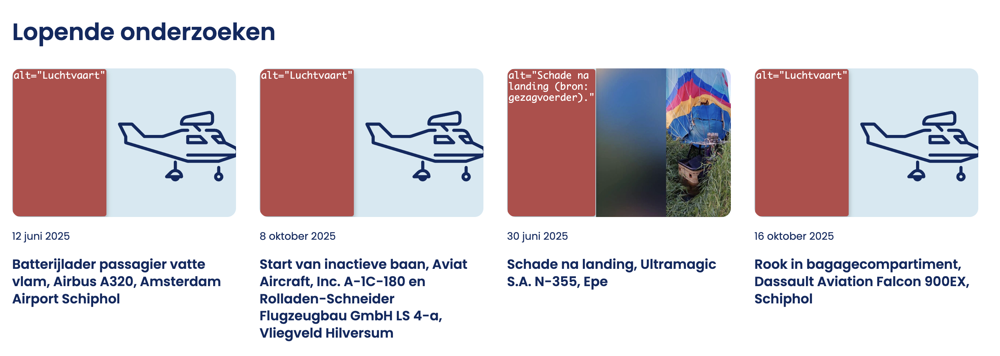
Op de website worden afbeeldingen (foto’s en illustraties) gebruikt bij nieuwsberichten, onderzoeken en zoekresultaten. Deze afbeeldingen hebben een tekstalternatief gekregen. Hierdoor worden teksten voorgelezen die geen extra informatie aan de pagina toevoegen.
Laat het alt-attribuut leeg om herhaling van de tekst te voorkomen (alt=””). Dat doe je in de Mediatheek van je website.
Issue nr. 2 - Linkdoel van een link met een afbeelding is onduidelijk
Impact: GrootType: TechniekWCAG: 2.4.4EN: 9.2.4.4
Op sommige pagina’s staan links die alleen uit afbeeldingen bestaan. Deze afbeeldingen zijn decoratief (zie issue 1) en zouden eigenlijk geen alt-tekst moeten hebben. Omdat ze echter de enige inhoud van een link vormen, krijgen ze een nieuwe functie: ze moeten aangeven wat het doel van de link is. In dat geval moet niet worden beschreven wat er op de afbeelding te zien is, maar waar de link naartoe leidt.
Dit is een uitdaging, omdat alle afbeeldingen op jullie website in een centrale mediatheek staan, waar de alternatieve tekst slechts één keer kan worden opgegeven.
De beste oplossing is om de blokken waarin deze situatie voorkomt te herprogrammeren. De link (<a>) rondom de afbeelding kan dan worden verwijderd. De kop van elk artikel is immers ook een link. Op deze manier wordt de sectie gebruiksvriendelijker voor blinde bezoekers, omdat de link dan maar één keer wordt voorgelezen.
Issue nr. 3 - Gekozen optie wordt alleen visueel aangegeven, maar niet in de code
In de header ziet de gekozen taal anders uit dan de niet-gekozen optie, maar dit verschil ontbreekt in de HTML-code. Hierdoor kan een schermlezer deze informatie niet doorgeven aan de bezoeker.
Dit probleem doet zich voor op de pagina's waar de zoekresultaten worden getoond. Naast de kop "sorteren op" wordt de geselecteerde optie weergegeven in vetgedrukte letters en onderstreepte link, maar deze informatie is afwezig in de HTML.
In de header staat een groep links om de taal van de pagina te wisselen die visueel als een groep wordt weergegeven, maar deze groepering ontbreekt in de HTML-structuur.
Wanneer voor ziende bezoekers duidelijk is dat links bij elkaar horen, moet die structuur ook in de HTML-code zijn opgenomen.
Oplossing:
Plaats de elementen in een nav-element of een ul-element.
Issue nr. 5 - Skiplink werkt niet: focus verplaatst niet naar de juiste plek
Op een aantal pagina's is een skiplink aanwezig, maar deze werkt niet correct. Hoewel de skiplink met het toetsenbord bedienbaar is, verplaatst de focus zich niet naar de unieke content op de pagina en blijft de focus bovenaan de pagina. Op de pagina ontbreekt content met het id “skiptocontent”.
Er moet een manier zijn om delen van een pagina over te slaan, zoals het navigatiemenu en andere elementen die op meerdere pagina’s terugkomen. Je gebruikt hier een skiplink voor. Daarmee kun je vaste blokken met herhalende inhoud overslaan. Een skiplink moet de eerste link op de pagina zijn. Deze link mag verborgen zijn, maar moet zichtbaar worden zodra hij toetsenbordfocus krijgt.
In de header staat de link “voorval melden”. Als een bezoeker de muispointer over deze link beweegt, klapt een menu uit. Het is niet mogelijk om dit menu te sluiten met de ESC-toets. Dit submenu bedekt de inhoud van de pagina en moet kunnen worden afgesloten zonder de muis te bewegen.
Oplossing:
Gebruik Javascript om dit submenu met de Esc-toets te kunnen sluiten.
Issue nr. 7 - Zichtbare tekst van het zoekveld staat niet in de toegankelijke naam
Impact: GrootType: TechniekWCAG: 2.5.3EN: 9.2.5.3
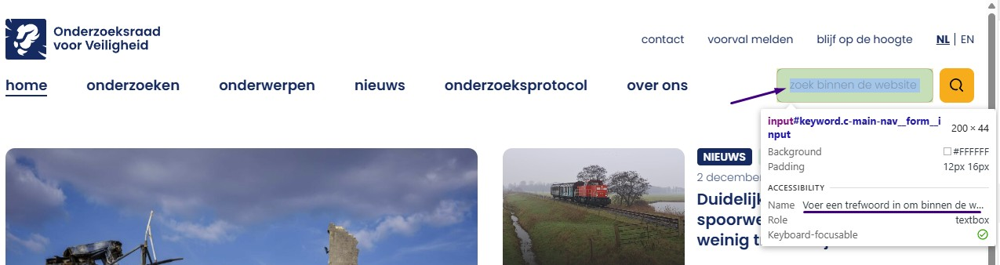
Op alle pagina’s is de zichtbare tekst van de zoekbalk “zoek binnen de website”, terwijl de toegankelijke naam van het invoerveld luidt: “Voer een trefwoord in om binnen de website mee te zoeken”.
Zie ook https://onderzoeksraad.nl/en/.
Wanneer de toegankelijke naam van een element afwijkt van de zichtbare tekst (in dit geval de placeholdertekst), kunnen bezoekers die spraaksoftware gebruiken het element niet goed bedienen. Spraakgestuurde opdrachten zijn namelijk gebaseerd op de zichtbare tekst. Als die tekst niet overeenkomt met de toegankelijke naam in de code, zal het commando niet herkend worden – en werkt het dus niet.
Oplossing:
Zorg ervoor dat de toegankelijke naam de zichtbare tekst bevat, bij voorkeur aan het begin van de naam. Verwijder het aria-label.
Issue nr. 8 - De volgorde van de toetsenbordfocus is niet logisch na het navigeren door een submenu
In de header openen de links ‘Onderzoeken’ en ‘Onderwerpen’ een submenu. Na het navigeren door het submenu met het toetsenbord, verplaatst de focus zich onverwachts naar interactieve elementen onder het menu, terwijl het submenu zichtbaar blijft. Dit zorgt voor een onlogische volgorde van toetsenbordnavigatie. Dit probleem is ook te zien in het mobiele menu dat wordt geopend met de zogenaamde hamburgerknop.
Wanneer een bezoeker met Shift+Tab navigeert en de link ‘Onderwerpen’ activeert, verschijnt een submenu. Tijdens het toetsenbordnavigeren binnen dit submenu is het echter mogelijk om de focus buiten het submenu te verplaatsen. De focus springt dan naar de onderliggende pagina-inhoud, terwijl het submenu open blijft staan.
Voor toetsenbordgebruikers is het essentieel dat interactieve elementen – zoals knoppen en links – in een logische volgorde worden gefocust. Die volgorde moet aansluiten bij de visuele opmaak en de verwachte interactiestroom. Als dat niet het geval is, kan dit leiden tot verwarring of frustratie, vooral voor bezoekers met motorische of visuele beperkingen of leesproblemen.
Oplossing:
Dit kun je op een van de volgende manieren oplossen:
Sluit het menu automatisch op het moment dat de toetsenbordfocus het menu verlaat.
Als het menu is afgesloten, moet de focus op de logische plek terugkomen. Dit kan de link zijn die het submenu heeft geopend of een ander logisch element op de pagina.
Issue nr. 9 - De staat van submenu niet doorgegeven aan schermlezer
Impact: GrootType: TechniekWCAG: 4.1.2EN: 9.4.1.2
De hoofdmenulinks “Onderzoeken” en “Onderwerpen” hebben een submenu, maar een blinde bezoeker krijgt geen informatie over of het submenu geopend of gesloten is.
Als een link een submenu kan tonen of verbergen, moet hulpsoftware de status van dat submenu (zichtbaar of verborgen) kunnen bepalen.
Oplossing:
Zorg dat het attribuut aria-expanded="true" wordt ingesteld wanneer het submenu is geopend en aria-expanded="false" wanneer het submenu is gesloten.
Issue nr. 10 - Bezoekers die inzoomen tot 200% kunnen niet meer alle functies gebruiken
Impact: GrootType: TechniekWCAG: 1.4.4EN: 9.1.4.4
Op alle pagina's is bij het inzoomen van de tekst tot 200% de zoekfunctionaliteit in de header niet meer zichtbaar, waardoor bezoekers die afhankelijk zijn van het vergroten van tekst geen toegang hebben tot de zoekfunctie.
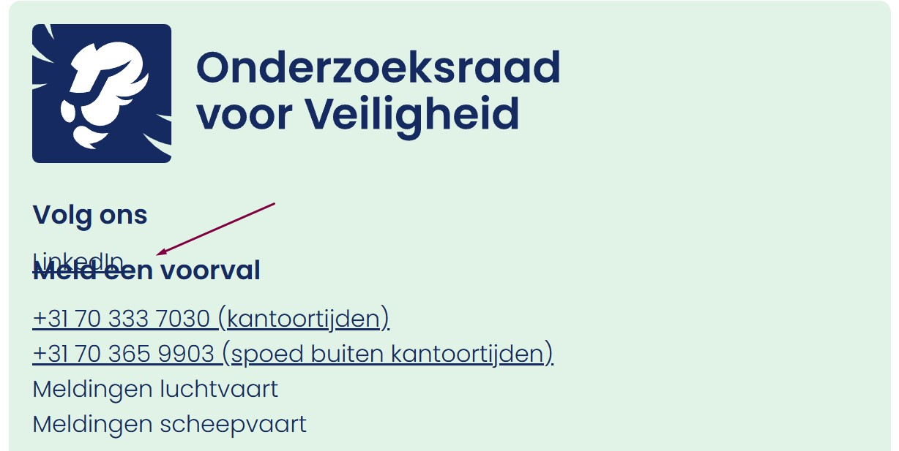
Op alle pagina's gaat bij het bekijken van de pagina’s met een schermresolutie van 1280 bij 1024 pixels en een zoom van 200% een deel van de tekst in de footer verloren, namelijk bij de links “LinkedIn” en “Meld een voorval”.
Dit probleem doet zich voor op de pagina https://onderzoeksraad.nl/home/zoeken/?_keyword=onderzoeksraad. Wanneer deze pagina wordt ingezoomd tot 200% , werkt de filterfunctie niet en zijn de links “Privacy”, "Cookies" en “Toegankelijkheid” niet zichtbaar onder de filterknop en niet bruikbaar.
Zorg dat alles nog werkt als een bezoeker inzoomt tot 200% op een scherm van 1280 bij 1024 pixels.
Issue nr. 11 - Elementen ontvangen toetsenbordfocus terwijl het menu gesloten is
Impact: GrootType: TechniekWCAG: 2.4.3EN: 9.2.4.3
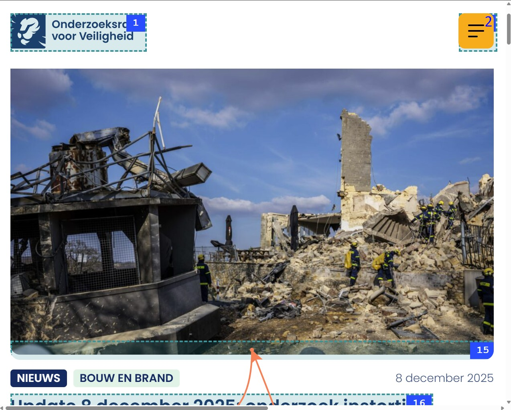
Wanneer op de pagina wordt ingezoomd, verschijnt een menuknop. Het hoofdmenu is verborgen maar de links in het menu kunnen nog steeds focus krijgen.
Bezoekers die geen muis gebruiken en met het toetsenbord navigeren, moeten vele malen op de Tab-toets drukken om op de pagina te komen. Omdat de focus op verborgen elementen landt, kan het ervoor zorgen dat bezoekers onbedoeld deze elementen kunnen activeren.
Zorg dat interactieve elementen geen toetsenbordfocus kunnen ontvangen wanneer het menu gesloten is en dat de menu-items alleen focusbaar zijn wanneer het menu is geopend, bijvoorbeeld door de focus programmatisch te beheren of door de zichtbaarheid en focusbaarheid van de elementen aan te passen.
Issue nr. 12 - Elementen die toetsenbordfocus krijgen zijn bedekt door sticky header en knop
Impact: GrootType: TechniekWCAG: 2.4.11
Op alle pagina's bedekt een vaste header een deel van de pagina-inhoud. Interactieve elementen zoals de link “Lees ons verhaal” kunnen wel toetsenbordfocus krijgen, maar bij het gebruik van Shift+Tab is de focusindicator verborgen achter de vaste header.
Hierdoor kunnen bezoekers die met het toetsenbord navigeren niet zien waar de toetsenbordfocus zich bevindt.
Op onderstaande pagina's staat op een klein scherm de knop “Filter op onderwerp”. Interactieve elementen, zoals de links Privacy, Cookies en Toegankelijkheid, kunnen nog steeds toetsenbordfocus ontvangen, maar de focusindicator is verborgen achter deze knop.
Zorg ervoor dat de sticky header of footer geen interactieve elementen of hun focusindicatoren bedekt. Je moet hiervoor bijvoorbeeld de z-index aanpassen, elementen herpositioneren of de header/footer dynamisch verkleinen op kleinere schermen.
Issue nr. 13 - Toetsenbordfocus is niet zichtbaar
Impact: GrootType: TechniekWCAG: 2.4.7EN: 9.2.4.7
De focus is niet zichtbaar op de links in de paginering.
De toetsenbordfocus moet altijd zichtbaar zijn op interactieve elementen zoals links, knoppen en invoervelden die met het toetsenbord focus kunnen krijgen. Bezoekers die met het toetsenbord navigeren moeten goed kunnen zien op welke plek van de pagina zij zich bevinden.
Enkele voorbeelden zijn:
https://onderzoeksraad.nl/home/zoeken/
https://onderzoeksraad.nl/home/nieuws/
https://onderzoeksraad.nl/home/onderzoeken/
Oplossing:
Zorg ervoor dat de toetsenbordfocus zichtbaar is op alle interactieve elementen. Op deze pagina staat een instructie om focuszichtbaarheid te testen: https://properaccess.nl/hoe-test-ik-focus-zichtbaarheid/.
Issue nr. 14 - Onvoldoende linktekst in paginering
Op deze pagina hebben de links in de paginering onvoldoende context. Ziende bezoekers begrijpen dat “2”, “3”, “4” enzovoort paginanummers zijn, maar dit is niet duidelijk voor bezoekers met een visuele beperking of voor bezoekers die een schermlezer gebruiken.
Voor ziende bezoekers is het duidelijk dat dit paginanummers zijn, maar voor slechtziende bezoekers en bezoekers die een schermlezer gebruiken, is het niet altijd duidelijk dat dit links naar volgende pagina’s zijn.
Dit probleem doet zich voor op de volgende pagina's:
Je kunt deze links toegankelijker maken door de linkteksten aan te vullen met het (visueel verborgen) woord "pagina” of een onzichtbaar kopje boven de paginering toe te voegen.
Issue nr. 15 - Contrast van focus in menu is lager dan 3:1
De toetsenbordfocus in de submenu’s is zichtbaar als een lichtblauwe achtergrond. In combinatie met de witte pagina is het kleurcontrast slechts 1,2:1. Niet alle bezoekers kunnen deze informatie zien.
Het kleurcontrast van informatieve elementen moet minimaal 3,0:1 zijn.
Oplossing:
Zorg dat deze informatieve elementen voldoende contrast hebben. Op deze pagina staat een instructie die uitlegt hoe je het kleurcontrast kunt testen: <https://properaccess.nl/hoe-test-ik-kleurcontrast/ >.
Op deze pagina staat onder de kop “Veiligheid vergroten door onderzoek” een groep van 9 links die visueel als een groep wordt weergegeven, maar deze groepering is niet vastgelegd in de HTML-structuur.
Wanneer voor ziende bezoekers duidelijk is dat links bij elkaar horen, moet die structuur ook in de HTML-code zijn opgenomen.
Dit probleem doet zich voor op pagina https://onderzoeksraad.nl/en/ onder het kopje "Meer veiligheid door onderzoek".
Oplossing:
Plaats de elementen in een ul-element. Een andere oplossing is het opnemen van deze links in een <section> met een aria-label die de inhoud beschrijft.
Issue nr. 17 - Leesvolgorde is niet logisch
Impact: MediumType: ContentWCAG: 1.3.2EN: 9.1.3.2
Op de homepagina staan nieuwsartikelen met HTML-elementen in de volgende volgorde: tags, datum, kop.
Als je deze artikelen van boven naar beneden laat voorlezen door een schermlezer, is niet duidelijk welke tag en datum bij welk artikel horen. Dat komt doordat de koppen niet bovenaan staan in de code van elk artikel. Dit kan verwarrend zijn voor bezoekers die een schermlezer gebruiken.
Je lost dit op door alle inhoud (afbeeldingen en tekst) die bij een bepaalde kop hoort, in de code onder die kop te plaatsen. Dit zorgt voor een logische structuur. De visuele vormgeving mag wel afwijken.
Op deze pagina toont het logo in de header zichtbaar de volledige tekst “Dutch Safety Board”, maar de alt-tekst is alleen “Logo Onderzoeksraad voor Veiligheid”, waardoor de zichtbare tekst niet voorkomt in de toegankelijke naam van de link. De toegankelijke naam van de link is daardoor niet gelijk aan de zichtbare tekst in het logo, wat problemen geeft bij het activeren van de link met spraaksoftware.
Dit probleem doet zich voor bij het logo onderaan deze pagina.
Oplossing:
Zorg dat de alt-tekst wordt aangepast zodat de volledige zichtbare tekst van het logo erin staat, namelijk “Dutch Safety Board”, waarbij deze tekst bij voorkeur vooraan staat en idealiter gelijk is aan de zichtbare tekst.
Issue nr. 19 - Nederlandse teksten zonder lokaal taalattribuut
Deze pagina heeft een aantal Nederlandse teksten die geen lokale taalswitch hebben gekregen. Omdat de taalcode van de pagina is ingesteld op “en” voor het Engels, worden deze teksten met de Engelstalige uitspraakregels voorgelezen.
Enkele voorbeelden zijn:
de skiplink ‘Direct naar de inhoud’
de alt-tekst van het logo ‘Logo Onderzoeksraad voor Veiligheid’
Op deze pagina staat een zijbalk met filters. De geselecteerde optie ziet er anders uit dan de overige opties, maar deze informatie is niet toegankelijk voor blinde en slechtziende bezoekers.
In de HTML is geen informatie aanwezig over welke filter is geselecteerd waardoor een schermlezer deze informatie niet aan een blinde bezoeker kan doorgeven.
Oplossing:
Maak deze filters toegankelijk voor blinde bezoekers door deze informatie aan een schermlezer te geven. Dat kun je doen door verborgen tekst aan deze links toe te voegen.
Wanneer deze pagina wordt bekeken met een schermresolutie van 1280 bij 1024 pixels en wordt ingezoomd tot 400%, zorgt de kop “Toegankelijkheid” voor een horizontale scroll.
Op deze pagina is het woord “Toegankelijkheid” te breed en wordt het niet afgebroken, waardoor het buiten de rechterrand van de viewport valt en bezoekers horizontaal moeten scrollen om het volledige woord te kunnen lezen.
Oplossing:
Als een lang woord niet binnen beeld past bij een scherm van 320 pixels, moet het worden afgebroken. Los dit bijvoorbeeld op met de CSS-eigenschap `word-break` of door de lettergrootte te verminderen.
Op deze pagina zijn filters aanwezig. Wanneer een filter is geselecteerd, verschijnt onder de zoekbalk een link om het geselecteerde filter te verwijderen. Deze link bevat een icoon met een “X” dat verborgen is voor schermlezers. Hierdoor heeft de link wel een toegankelijke naam met de naam van het geselecteerde filter, maar ontbreekt informatie over het verwijderen van deze optie, waardoor het doel van de link onduidelijk is.
Issue nr. 23 - Taalwisseling ontbreekt op anderstalige content
Impact: MediumType: ContentWCAG: 3.1.2EN: 9.3.1.2
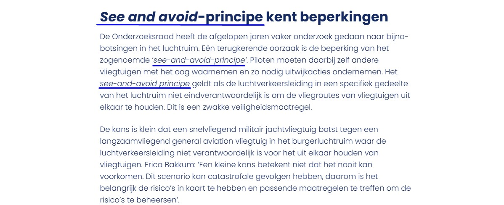
Op deze pagina staat de zin “Near mid-air collision between F-16 and Tecnam” en “See and avoid-principe” in het Engels, zonder een taalcode.
Deze tekst wordt nu voorgelezen volgens de uitspraakregels van de primaire taal van de pagina. Die is ingesteld in het lang-attribuut op het html-element, in dit geval op “nl”/”nl-NL”. De schermlezer zou juist op de taal van de zin moeten overschakelen. Dat bereik je door deze anderstalige inhoud een lokaal lang-attribuut te geven met de juiste waarde.
Voeg een lang-attribuut met de juiste taalcode toe aan het html-element dat de tekst in een andere taal bevat. Als de tekst bijvoorbeeld in het Engels is, voeg je lang="en" toe aan het element.
Issue nr. 24 - Onjuiste HTML-structuur voor opsomming
Impact: Klein Type: ContentWCAG: 1.3.1EN: 9.1.3.1
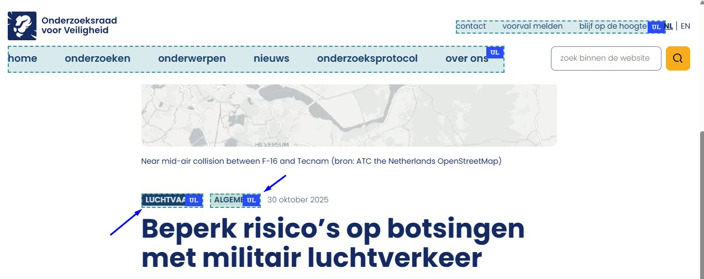
Op deze pagina staat een lijst met twee items die in de code is opgebouwd als twee afzonderlijke ul-elementen, waarbij elke lijst (ul) slechts één lijstitem (li) bevat.
Tekst die eruitziet als een opsomming, moet ook als opsomming worden gemarkeerd in de code. Voor lijsten en opsommingen worden de elementen <ol> (genummerde lijst) of <ul> (opsomming met bullets) gebruikt. Hierdoor wordt de structuur duidelijk voor hulpsoftware, en kunnen schermlezers vooraf aankondigen hoeveel items een lijst bevat. Dit helpt blinde bezoekers om de hoeveelheid informatie beter in te schatten. Sublijsten moeten worden gemarkeerd met <ul> en genest binnen het bijbehorende li-element.
Meer informatie over het belang van correcte HTML-lijsten is te vinde op:https://properaccess.nl/waarom-correcte-html-lijsten-het-verschil-maken-in-toegankelijkheid/.
Oplossing:
Zorg ervoor dat alle opsommingen correct zijn gemarkeerd in de HTML-structuur.
Issue nr. 25 - Het type content in het iframe is niet beschreven in het title-attribuut
Impact: KleinType: ContentWCAG: 2.4.6EN: 9.2.4.6
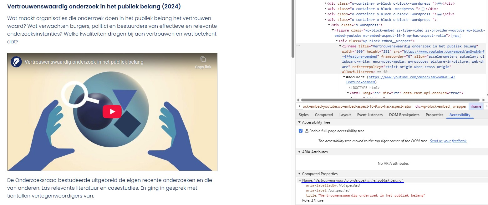
Op deze pagina staat een video in een iframe met het attribuut title met de tekst “Vertrouwenswaardig onderzoek in het publiek belang”.
Iframes moeten een duidelijke beschrijving hebben meestal via het title-attribuut. Hierin moet staan welk type inhoud het is (bijvoorbeeld een podcast of video) en waar het inhoudelijk over gaat. Deze beschrijving moet uniek en betekenisvol zijn, zodat bezoekers met hulpsoftware kunnen bepalen of ze de inhoud willen verkennen.
Op deze pagina staat onder de kop “Vertrouwenswaardig onderzoek in het publiek belang (2024)” een video. Aan het einde van de video staan tekst en logo’s in beeld, maar er is geen media-alternatief of audiodescriptie aanwezig, waardoor deze visuele informatie niet toegankelijk is voor blinde bezoekers. Bezoekers die blind of slechtziend zijn, missen hierdoor informatie.
Voor succescriterium 1.2.3 kan dit worden opgelost met een geschreven tekst (media-alternatief). Voor succescriterium 1.2.5 is dat echter niet genoeg. Hiervoor moet een audiobeschrijving worden toegevoegd die de visuele elementen in de video beschrijft, zoals namen, functies, logo’s en teksten.
Issue nr. 27 - De Youtube-video’s gebruiken letters als sneltoetsen
Impact: MediumType: ContentWCAG: 2.1.4EN: 9.2.1.4
Op deze pagina bevat de pagina een YouTube-videospeler die gebruikmaakt van sneltoetsen met één teken op het toetsenbord.
De Youtube-speler gebruikt sneltoetsen, zoals de ‘k' om de video te starten of stoppen en de 'm' om het geluid uit te zetten. Deze sneltoetsen botsen met schermlezers. Ze zijn namelijk ook actief als de toetsenbordfocus op een ander element in de videospeler staat. Dit kan problemen geven voor mensen die met spraakbediening werken, omdat deze letters soms in de uitgesproken woorden zitten. Ook voor mensen die per ongeluk een toets op het toetsenbord indrukken is het onhandig.
Je lost dit op door de parameter disablekb=1 toe te voegen aan de URI van de video in de HTML-code. Hiermee schakel je de sneltoetsen uit, terwijl toetsenbordbediening mogelijk blijft. Bekijk voor meer informatie https://developers.google.com/youtube/player_parameters#disablekb (Engels).
Op deze pagina staan secties met verborgen inhoud. Het pijl-icoon dat de open of gesloten toestand van deze secties aangeeft heeft een onvoldoende contrastratio, die momenteel 1,2:1 is.
Oplossing:
Zorg dat het contrast tussen het pijltje en de achtergrondkleur minimaal 3,0:1 is.
Issue nr. 29 - Klikbare items in een gesloten accordeonsectie krijgen toetsenbordfocus
Impact: GrootType: TechniekWCAG: 2.4.3EN: 9.2.4.3
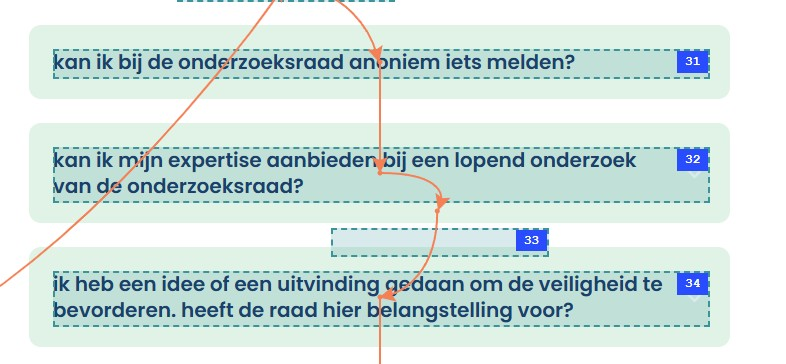
Op deze pagina staan onder de kop “Veelgestelde vragen” secties met verborgen inhoud waarbij een probleem is met de focusvolgorde. Elementen binnen ingeklapte blokken ontvangen nog steeds toetsenbordfocus, terwijl deze inhoud niet zichtbaar is.
Dit is verwarrend voor bezoekers die met het toetsenbord navigeren en daarbij naar het scherm kijken.
Oplossing:
Zorg dat elementen die niet zichtbaar zijn geen toetsenbordfocus krijgen.
Issue nr. 30 - Accordeoninhoud wordt door schermlezers gelezen terwijl deze is ingeklapt
Impact: MediumType: ContentWCAG: 1.3.1EN: 9.1.3.1
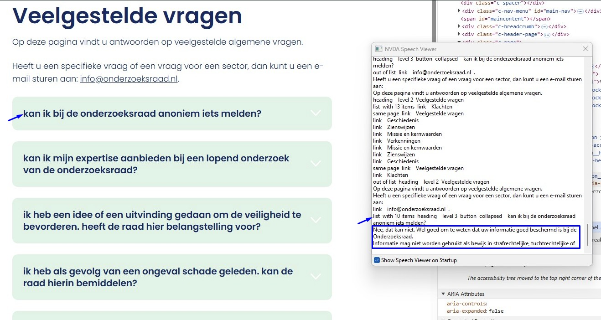
Op deze pagina kunnen schermlezers de inhoud binnen ingeklapte blokken benaderen en voorlezen, ook wanneer het accordeon visueel is ingeklapt en niet door de bezoeker is geopend, waardoor informatie wordt aangekondigd die niet zichtbaar is op het scherm.
Er wordt nu een aria-expanded attribuut gebruikt dat aangeeft dat de accordion is gesloten wat verwarrend kan zijn voor bezoekers die een schermlezer gebruiken en aangeeft dat de inhoud programmatisch niet correct is verborgen.
Oplossing:
Zorg dat inhoud wordt verborgen voor hulpsoftware wanneer deze is ingeklapt, bijvoorbeeld door passende ARIA-attributen zoals aria-hidden te gebruiken of door focus en zichtbaarheid correct te beheren.
In de caroussel wordt in de dot-navigatie kleur gebruikt om de actieve slide aan te geven, maar het contrast tussen de actieve en niet-actieve dot is 1,2:1.
Oplossing:
Zorg dat het actieve bolletje duidelijk te onderscheiden is van de andere bolletjes. Dat kan als volgt:
Verhoog het contrast: vergroot het contrast tussen de kleur van het bolletje en de achtergrond te tot minimaal 3,0:1.
Gebruik een extra aanwijzing: verander de vorm van het actieve bolletje. Je kunt het bijvoorbeeld iets groter maken dan de andere bolletjes, of omlijnd maken in plaats van ingevuld.
Issue nr. 33 - Contrast van icoon op knop is te laag
Op deze pagina heeft de dot-navigatie een onvoldoende kleurcontrast tussen het icoon en de achtergrond. De contrastratio van 2,3:1 voor de niet-actieve dot is te laag en de contrastratio van 1,9:1 voor de actieve dot is ook onvoldoende.
Het icoon is dus niet voor iedereen zichtbaar.
Oplossing:
Zorg voor een minimaal contrast van 3,0:1.
Issue nr. 34 - Beschrijving van een grafiek ontbreekt of onvolledig
Impact: MediumType: ContentWCAG: 1.1.1EN: 9.1.1.1
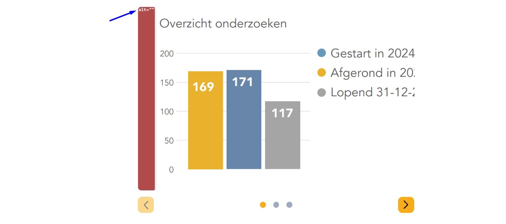
Op deze pagina staan binnen de sectie onder “Onderzoeken gericht op overheidsbeleid” complexe afbeeldingen zonder tekstalternatief.
Complexe afbeeldingen zoals infographics en schema’s bevatten veel informatie die niet toegankelijk is voor iemand die de afbeelding niet kan zien.
Oplossing:
Deze informatie kan gegeven worden via een uitgebreide alt-tekst of een uitgeschreven tekst die op de pagina zelf geplaatst kan worden, maar deze mag ook op een andere pagina of in een downloadbaar bestand staan. Als auteur van de pagina weet je zelf beter welke informatie je aan je lezer wil geven: alle getallen uit de grafiek of alleen de trend in de ontwikkeling van de cijfers.
Issue nr. 35 - Alleen kleur is gebruikt in legenda bij grafiek
Impact: MediumType: ContentWCAG: 1.4.1EN: 9.1.4.1
Op deze pagina wordt in grafieken alleen kleur gebruikt om informatie over te brengen. Dit is te zien aan het gebruik van geel, blauw en grijs in de afbeelding onder de kop “Onderzoeken gericht op overheidsbeleid”.
Alleen als je de kleuren kunt zien en van elkaar kunt onderscheiden zie je welke balk / lijn bij welke categorie in de legenda hoort.
Oplossing:
Gebruik naast kleur bijvoorbeeld ook verschillende soorten arcering of datalabels in tekst.
Issue nr. 36 - Kleurcontrast tussen lijnen of balken in grafiek is niet voldoende
Op deze pagina staan grafieken waarin sommige kleurcombinaties een onvoldoende contrastratio hebben, bijvoorbeeld geel (#EFB122) en grijs (#A5A5A5) op een witte achtergrond.
Oplossing:
Zorg dat het contrast tussen informatieve elementen van een grafiek minimaal 3,0:1 is, zodat bezoekers ze van elkaar kunnen onderscheiden. Controleer of alle kleuren in de grafiek voldoende contrast hebben.
Issue nr. 37 - Onvoldoende kleurcontrast bij tekst die groter is dan 24px
Op deze pagina staan onder de kop “Onderzoeken gericht op overheidsbeleid” grafieken waarin witte tekst “169” op een gele achtergrond (#EFB122) staat met een te lage contrastratio van 1,9:1. Ditzelfde probleem komt ook voor bij andere grafieken op deze pagina, waaronder witte tekst op een grijze achtergrond (#A5A5A5), waarbij de contrastratio eveneens te laag is en 2,9:1 bedraagt.
Issue nr. 38 - Succesbericht wordt niet tijdig voorgelezen door schermlezers
Impact: GrootType: TechniekWCAG: 4.1.3EN: 9.4.1.3
Het formulier onder de kop “Ik wil op de hoogte blijven van” toont een statusbericht “Bedankt voor je aanmelding Je inschrijving is succesvol verzonden.” als het bericht is verzonden, maar dit bericht wordt niet aangekondigd door een schermlezer.
De pagina laadt niet opnieuw en de toetsenbordfocus wordt niet naar de melding verplaatst. Daarom is extra code nodig zodat schermlezers het statusbericht automatisch voorlezen zodra het verschijnt.
Het formulier maakt gebruik van standaard HTML5-validatie. Deze foutmeldingen verschillen per browser en worden niet altijd volledig of toegankelijk voorgelezen. Bovendien verdwijnen ze automatisch.
Oplossing:
Implementeer eigen foutmeldingen die consistent, volledig en toegankelijk zijn.
strong-elementen worden gebruikt voor stylingdoeleinden
Impact: KleinType: ContentWCAG: 1.3.1EN: 9.1.3.1
Op deze pagina worden vóór en onder de kop “Evaluatie Onderzoeksraad voor Veiligheid (2020)” de strong-elementen gebruikt in volledige zinnen voor puur visuele opmaak. Deze elementen worden toegepast op hele zinnen in plaats van op korte tekstfragmenten die daadwerkelijk nadruk nodig hebben, waardoor onbedoelde semantische nadruk ontstaat en schermlezers een verkeerde belangrijkheid of klemtoon kunnen overbrengen.
Oplossing:
Verwijder onnodige strong-elementen en pas de visuele opmaak toe met CSS. Als alleen visuele nadruk nodig is, gebruik CSS of, indien nodig, b voor vetgedrukte tekst en i voor cursieve tekst zonder semantische betekenis toe te voegen.
Issue nr. 41 - Em-element is in plaats van kop-element gebruikt
Impact: MediumType: ContentWCAG: 1.3.1EN: 9.1.3.1
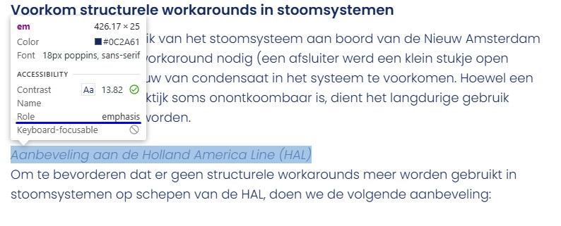
Op deze pagina zijn de volgende teksten onjuist opgemaakt met em-elementen in plaats van correcte kop-elementen: “Aanbeveling aan de Holland America Line (HAL)”, “Aanbeveling aan NMT-IRO1”, “Aanbeveling aan de Koninklijke Vereniging van Nederlandse Reders (KVNR)” en andere.
Het em-element is bedoeld om woorden extra nadruk te geven. Het heeft daarmee een andere semantische betekenis dan een kop. Dit element moet dan ook niet gebruikt worden voor koppen.
Oplossing:
Verwijder de em-elementen en markeer de tussenkopjes als h3-koppen (of een ander geschikt kopniveau).
Op deze pagina wordt het <time> element gebruikt als een container voor de tekst “Startdatum onderzoek 25 maart 2024”. Dit is geen correct gebruik van dit element. Vervang <time> door een neutrale <span> of een <div>.
Zie de pagina Verkenningen voor de bevindingen over de video.
strong-element in plaats van kop-element
Impact: MediumType: ContentWCAG: 1.3.1EN: 9.1.3.1
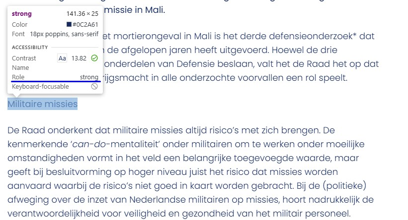
Op deze pagina zijn de volgende teksten koppen, maar ontbreken de juiste h2 - h6-elementen. In plaats daarvan wordt het strong-element gebruikt om deze teksten eruit te laten zien als koppen, zoals bij “Militaire missies”, “Oorzaak mortierongeval”, “Munitiebeheer Defensie” en andere.
Het strong-element is niet bedoeld om koppen mee te markeren. Je moet dat altijd doen met een kop-element, zoals h2. Koppen gebruik je om een tekst te structureren. Alleen als je ze als kop markeert met een kop-element, begrijpt hulpsoftware die betekenis.
Oplossing:
Verwijder het strong-element en gebruik de juiste kop-elementen om deze koppen te markeren, zoals h2 of h3. Dit element wordt vaak toegevoegd met een knop “B” in een tekstbewerker.
strong-element is gebruikt voor opmaak
Impact: KleinType: ContentWCAG: 1.3.1EN: 9.1.3.1
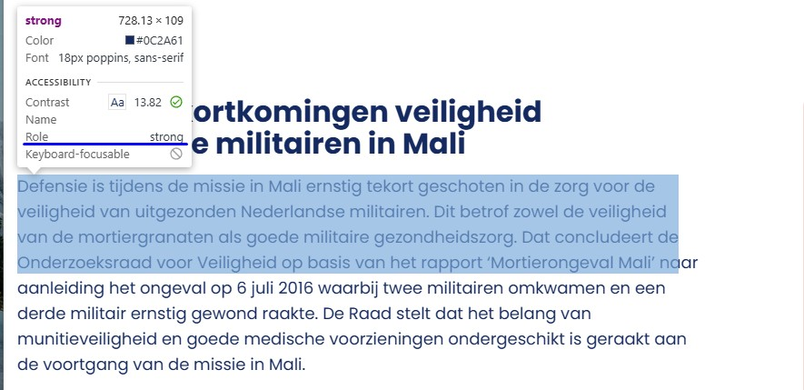
Op deze pagina wordt onder de kop “Ernstige tekortkomingen veiligheid Nederlandse militairen in Mali” het strong-element onjuist gebruikt voor opmaakdoeleinden, waarbij volledige zinnen in een strong-element zijn geplaatst om deze vet weer te geven.
Het strong-element heeft een semantische waarde: het geeft een bepaalde betekenis aan de tekst die erin staat. Dit element geeft aan dat de tekst extra nadruk moet krijgen. Om die reden kun je dit element beter niet gebruiken om alleen een visueel effect te bereiken (vetgedrukte tekst).
Oplossing:
Verwijder de onnodige strong-elementen en gebruik CSS om de tekst vet te maken. Je kunt ook met een <b>-element tekst vetgedrukt maken.
Issue nr. 42 - Onzichtbaar element krijgt toetsenbordfocus
Impact: GrootType: TechniekWCAG: 2.4.3EN: 9.2.4.3
Op deze pagina komt de toetsenbordfocus na de link “Bestand downloaden: https://www.onderzoeksraad.nl/image/2…” terecht op een onzichtbaar interactief element.
De toetsenbordfocus mag echter niet terechtkomen op onzichtbare interactieve elementen . Als dat wel gebeurt, kan een bezoeker deze onbedoeld activeren en raakt de navigatie onvoorspelbaar.
Oplossing:
Zorg ervoor dat alleen zichtbare elementen toetsenbordfocus kunnen krijgen en dat de focusvolgorde logisch en voorspelbaar blijft.
Issue nr. 43 - Onjuiste HTML-structuur voor opsomming
Impact: MediumType: ContentWCAG: 1.3.1EN: 9.1.3.1
Op deze pagina staat onder de kop “Aanbevelingen” een lijst waarbij elk lijstitem een geneste lijst bevat die niet correct is opgemaakt in de code.
Tekst die eruitziet als een opsomming, moet ook als opsomming worden gemarkeerd in de code. Voor lijsten en opsommingen worden de -elementen <ol> (genummerde lijst) of <ul> (opsomming met bullets) gebruikt. Hierdoor wordt de structuur duidelijk voor hulpsoftware, en kunnen schermlezers vooraf aankondigen hoeveel items een lijst bevat. Dit helpt blinde bezoekers om de hoeveelheid informatie beter in te schatten. Sublijsten moeten worden gemarkeerd met <ul> en genest binnen het bijbehorende li-element.
Issue nr. 44 - Bestandsnaam wordt getoond in plaats van de titel
Impact: MediumType: ContentWCAG: 2.4.2EN: 9.2.4.2
Dit pdf-document heeft een beschrijvende titel, maar deze wordt niet weergegeven in de titelbalk; in plaats daarvan wordt de bestandsnaam weergegeven.
Als je een pdf opent in een pdf-lezer (zoals Adobe Acrobat of een browser), zie je de bestandsnaam meestal bovenaan in de titelbalk, bijvoorbeeld document123.pdf. Maar als je een documenttitel in de pdf-metadata instelt, dan wordt die titel in plaats van de bestandsnaam getoond. Dit maakt het document toegankelijker voor bezoekers met verschillende beperkingen. Zij kunnen dan snel en gemakkelijk zien of het document relevant is.
Oplossing:
Los het op in Adobe Acrobat:
1. Open het pdf-document in Adobe Acrobat.
2. Ga naar Bestand > Eigenschappen.
3. Ga naar het tabblad Beschrijving.
4. Vul in het veld Titel de titel van het document in.
5. Klik op OK en sla het bestand op.
Issue nr. 45 - Een deel van het document is niet voorzien van codes
Impact: MediumType: ContentWCAG: 1.3.1EN: 9.1.3.1
In het PDF-document is het document gedeeltelijk getagd. De pagina’s 9, 10 en 52 zijn niet getagd. Ook zijn de bijschriften bij afbeeldingen en tabellen niet getagd, zoals “Figuur 1: Bovenaanzicht van de indeling van de voorste afvalwaterruimte (bron: Onderzoeksraad voor Veiligheid).” en “Tabel 1: Overzicht vloot Holland America Line (met jaar van oplevering).”.
Dit deel van het document kunnen wij hierdoor niet onderzoeken. Het gaat om alle succescriteria die met de pdf-codelaag te maken hebben, zoals semantische koppen en alternatieve teksten bij afbeeldingen. Als je dit oplost, is het dus mogelijk dat er nieuwe toegankelijkheidsproblemen ontstaan die nu nog niet aan het licht zijn gekomen. Bijvoorbeeld met de tekstlabels voor de formuliervelden, maar ook de relaties van de formuliervelden met de kolomkoppen erboven.
Oplossing:
Voorzie dit gedeelte van codes die de structuur van het document weergeven.
Opslaan als getagde PDF in Word (Windows)
Ga naar Bestand. Kies Opslaan als Adobe PDF (als je Acrobat hebt) of ga naar Meer → Exporteren → PDF/XPS-document maken. In het venster dat opent, klik je op Opties. Zet een vinkje bij Documentstructuurtags voor toegankelijkheid en bij Bladwijzers maken met koppen. Op deze manier kunnen gebruikers met het toetsenbord snel van sectie naar sectie springen. Dit werkt alleen wanneer echte kopstijlen zijn gebruikt.
Opslaan als getagde PDF in Word (Mac)
Ga naar Bestand → Opslaan als, kies PDF in het keuzemenu en selecteer Best voor elektronische distributie en toegankelijkheid, dat gebruikmaakt van Microsoft online service. Op Mac worden bladwijzers automatisch op basis van de koppen gegenereerd, zonder dat hiervoor instellingen hoeven te worden aangepast.
Issue nr. 46 - Leesvolgorde van tags is niet logisch
Impact: MediumType: ContentWCAG: 1.3.2EN: 9.1.3.2
In het PDF-document is de leesvolgorde niet logisch. Zo zijn de tags van pagina 1, 2 en 4 aan het einde van het document geplaatst.
Schermlezers lezen een pdf-document in de volgorde van de tags die in de codelaag staan. Als die niet logisch is, is de leesvolgorde dat dus ook niet en wordt het voor een blinde bezoeker moeilijk om de inhoud van het document te begrijpen.
Oplossing:
Zorg dat de volgorde van de tags logisch is.
Issue nr. 47 - Informatieve afbeeldingen hebben geen alt-tekst
Impact: MediumType: ContentWCAG: 1.1.1EN: 9.1.1.1
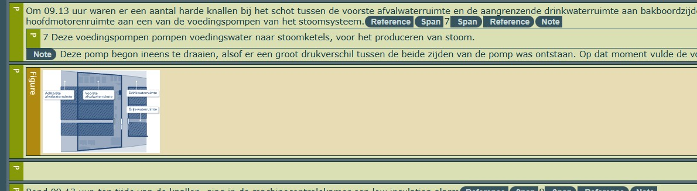
In het PDF-document bevat het document informatieve afbeeldingen zonder tekstalternatief. Dit komt voor op pagina’s 8, 9, 10 en andere pagina’s.
Afbeeldingen die met de Figure-tag zijn geplaatst, moeten altijd een beschrijving (alt-tekst) hebben. De Figure-tag is alleen bedoeld voor informatieve afbeeldingen. Schermlezers lezen de alt-tekst voor, zodat blinde bezoekers ook alle informatie tot zich kunnen nemen. Omdat de alternatieve tekst nu ontbreekt, lezen schermlezers alleen “afbeelding” voor. Blinde bezoekers kunnen hierdoor het gevoel krijgen dat ze inhoud missen.
Oplossing:
Voeg tekst alternatief toe aan deze informatieve afbeeldingen.
Issue nr. 48 - Kleur wordt gebruikt om informatie te verstrekken
Impact: MediumType: ContentWCAG: 1.4.1EN: 9.1.4.1
In het PDF-document wordt op pagina’s 9 en 10 onder de kop “Tijdlijn gebeurtenissen Nieuw Amsterdam” een tijdlijn getoond waarbij alleen kleur wordt gebruikt om informatie te geven over de getroffen ruimtes. Alleen bezoekers die de kleuren kunnen zien en onderscheiden, kunnen bepalen welke gekleurde lijn bij welk type ruimte hoort.
Oplossing:
Dit kan worden opgelost door naast kleur ook verschillende patronen of vormen te gebruiken om de informatie over te brengen.
Dit pdf-document heeft geen titel ingesteld in de bestandseigenschappen.
Zelfs als er een titel op de eerste pagina staat, moet in de PDF-instellingen ook een documenttitel worden ingesteld. Bij het openen van een pdf in een pdf-lezer (zoals Adobe Acrobat of een browser) wordt meestal de bestandsnaam bovenaan in de titelbalk getoond, bijvoorbeeld document123.pdf. Wanneer in de pdf-metadata echter een documenttitel is ingesteld, wordt deze titel in plaats van de bestandsnaam weergegeven. Dit maakt het document toegankelijker voor bezoekers met verschillende beperkingen, omdat zij dan snel en gemakkelijk kunnen bepalen of het document relevant is.
Oplossing:
Los het op in Adobe Acrobat:
1. Open het pdf-document in Adobe Acrobat.
2. Ga naar Bestand > Eigenschappen.
3. Ga naar het tabblad Beschrijving.
4. Vul in het veld Titel een beschrijvende titel in, bijvoorbeeld: "Rapport: Bevolkingscijfers 2023".
5. Klik op OK en sla het bestand op.
Issue nr. 50 - Structuur van pdf-document is niet in codes vastgelegd
Impact: MediumType: ContentWCAG: 1.3.1EN: 9.1.3.1
In het PDF-document ontbreken codes, waardoor de inhoud niet toegankelijk is voor hulpsoftware.
Bovendien kunnen wij de pdf hierdoor niet volledig onderzoeken. Het gaat om alle succescriteria die met de pdf-codelaag te maken hebben, zoals semantische koppen en alternatieve teksten bij afbeeldingen. Als je dit oplost, is het dus mogelijk dat er nieuwe toegankelijkheidsproblemen ontstaan die nu nog niet aan het licht zijn gekomen.
Oplossing:
Voeg codes toe aan het document die de structuur van het document weergeven.
Opslaan als getagde PDF in Word (Windows)
Ga naar Bestand. Kies Opslaan als Adobe PDF (als je Acrobat hebt) of ga naar Meer → Exporteren → PDF/XPS-document maken. In het venster dat opent, klik je op Opties. Zet een vinkje bij Documentstructuurtags voor toegankelijkheid en bij Bladwijzers maken met koppen. Op deze manier kunnen gebruikers met het toetsenbord snel van sectie naar sectie springen. Dit werkt alleen wanneer echte kopstijlen zijn gebruikt.
Opslaan als getagde PDF in Word (Mac)
Ga naar Bestand → Opslaan als, kies PDF in het keuzemenu en selecteer Best voor elektronische distributie en toegankelijkheid, dat gebruikmaakt van Microsoft online service. Op Mac worden bladwijzers automatisch op basis van de koppen gegenereerd, zonder dat hiervoor instellingen hoeven te worden aangepast.
Issue nr. 51 - Kleurcontrast van kleine tekst is te laag
Impact: MediumType: ContentWCAG: 1.4.3EN: 9.1.4.3
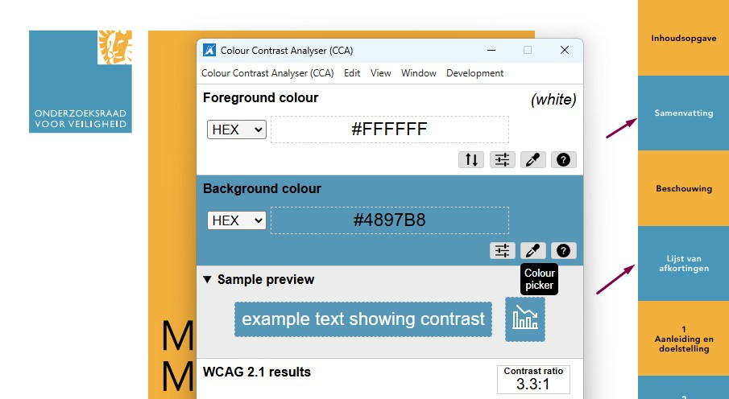
In het PDF-document op URL staat op alle pagina’s witte tekst zoals “SAMENVATTING”, “LIJST VAN AFKORTINGEN”, “2 ACHTERGRONDINFORMATIE EN TOEDRACHT” en andere teksten op een blauwe achtergrond met kleurcode #3397B9. De contrastratio is te laag en bedraagt 3,4:1. Deze kleurencombinatie komt op meerdere pagina’s voor.
Op pagina 2 staat blauwe tekst met kleurcode #3397B9, namelijk “www.onderzoeksraad.nl”, op een witte achtergrond en ook hier is de contrastratio te laag met 3,4:1. Deze combinatie komt eveneens op meerdere pagina’s voor.
Op pagina 5 staat witte tekst “SAMENVATTING” op een lichtblauwe achtergrond met kleurcode #A8CEE1 en hier is de contrastratio 1,7:1. Deze kleurencombinatie komt ook op andere pagina’s voor. Zorg dat het contrast minimaal 3,0:1 is.
Op pagina 107 staat oranje tekst met kleurcode #FCB74A, namelijk “Bezoekadres” en “Postadres”, op een witte achtergrond en ook hier is de contrastratio te laag met 1,7:1.
In het PDF-document staan op pagina 7 twee opeenvolgende koppen van kopniveau 1 zonder inhoud ertussen, bijvoorbeeld “1” en “Inleiding”. Als er een kop in een document staat waar geen inhoud op volgt, kunnen blinde bezoekers denken dat er inhoud ontbreekt. Dit probleem staat op pagina 11, 19, 27 en andere pagina’s.
Oplossing:
Zorg dat het nummer en de tekst worden samengevoegd tot één kop.
Issue nr. 53 - Een deel van het document is niet voorzien van codes
Impact: MediumType: ContentWCAG: 1.3.1EN: 9.1.3.1
In het PDF-document is niet alle inhoud correct gecodeerd. De koppen en teksten op pagina’s met kaarten en afbeeldingen zijn niet gecodeerd, zoals op pagina 7, 14 en 21. Een voorbeeld hiervan is de kop “Ligging ongevalslocatie” op pagina 7.
Dit deel van het document kunnen wij hierdoor niet onderzoeken. Het gaat om alle succescriteria die met de pdf-codelaag te maken hebben, zoals semantische koppen en alternatieve teksten bij afbeeldingen. Als je dit oplost, is het dus mogelijk dat er nieuwe toegankelijkheidsproblemen ontstaan die nu nog niet aan het licht zijn gekomen. Bijvoorbeeld met de tekstlabels voor de formuliervelden, maar ook de relaties van de formuliervelden met de kolomkoppen erboven.
Oplossing:
Voorzie dit gedeelte van codes die de structuur van het document weergeven.
Opslaan als getagde PDF in Word (Windows)
Ga naar Bestand. Kies Opslaan als Adobe PDF (als je Acrobat hebt) of ga naar Meer → Exporteren → PDF/XPS-document maken. In het venster dat opent, klik je op Opties. Zet een vinkje bij Documentstructuurtags voor toegankelijkheid en bij Bladwijzers maken met koppen. Op deze manier kunnen gebruikers met het toetsenbord snel van sectie naar sectie springen. Dit werkt alleen wanneer echte kopstijlen zijn gebruikt.
Opslaan als getagde PDF in Word (Mac)
Ga naar Bestand → Opslaan als, kies PDF in het keuzemenu en selecteer Best voor elektronische distributie en toegankelijkheid, dat gebruikmaakt van Microsoft online service. Op Mac worden bladwijzers automatisch op basis van de koppen gegenereerd, zonder dat hiervoor instellingen hoeven te worden aangepast.
Issue nr. 54 - Alleen kleur gebruikt in legenda bij grafiek
Impact: MediumType: ContentWCAG: 1.4.1EN: 9.1.4.1
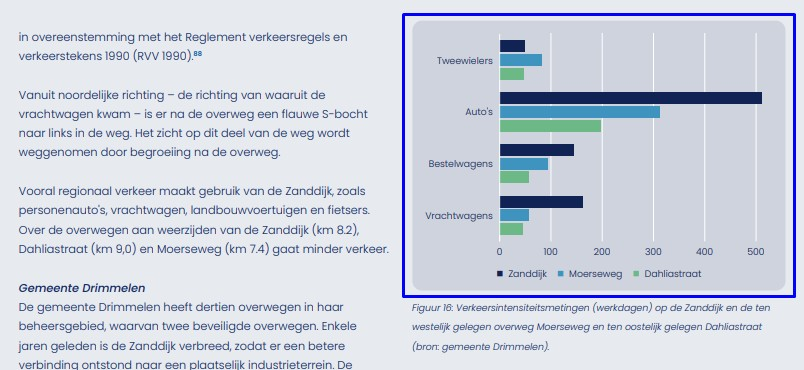
In het PDF-document staat op pagina 43 onder de kop “Gemeente Drimmelen” een grafiek. Kleur wordt gebruikt om informatie over te brengen, zoals te zien is in de legenda en de balken in de grafiek.
Alleen mensen die de kleuren kunnen zien en van elkaar kunnen onderscheiden zien welke balk / lijn bij welke categorie in de legenda hoort. Dit kan opgelost worden door naast kleur bijvoorbeeld ook verschillende soorten arcering te gebruiken.
Oplossing:
Gebruik naast kleur bijvoorbeeld ook verschillende soorten arcering.
Issue nr. 55 - Onvoldoende kleurcontrast tussen lijnen of balken in grafiek
In het PDF-document staat op pagina 43 onder de kop “Gemeente Drimmelen” een blauwe balk met kleurcode #2294C0 en een groene balk met kleurcode #5FB987. Op een lichtblauwe achtergrond met kleurcode #CED3DD is de contrastratio van deze balken lager dan 3,0:1. Ook is de contrastratio van de groene balk met kleurcode #5FB987 op een witte lijn 2,4:1.
Oplossing:
Zorg dat het contrast tussen informatieve elementen van een grafiek minimaal 3,0:1 is, zodat bezoekers ze van elkaar kunnen onderscheiden. Controleer of alle kleuren in de grafiek voldoende contrast hebben.
Issue nr. 56 - Informatieve afbeelding is als achtergrondafbeelding geplaatst
Impact: MediumType: ContentWCAG: 1.1.1EN: 9.1.1.1
In het PDF-document bevat de laatste pagina een logo-afbeelding die is gemarkeerd als artefact.
Afbeeldingen die als artefact zijn toegevoegd, zijn niet zichtbaar voor schermlezers. De informatie in deze afbeeldingen is daardoor niet toegankelijk voor bezoekers die de tekst laten voorlezen. Informatieve afbeeldingen moeten via een `Figure`-tag worden geplaatst en een alternatieve tekst krijgen die de afbeelding duidelijk beschrijft.
Oplossing:
Voeg het logo toe met de `Figure`-tag en geef het een beschrijvende alternatieve tekst.
Link naar het document: https://onderzoeksraad.nl/wp-content/uploads/2026/01/kwartaalrapportage-luchtvaart-q3-2025.pdf
Issue nr. 57 - Logo heeft geen tekstalternatief
Impact: MediumType: ContentWCAG: 1.1.1EN: 9.1.1.1
In het PDF-document staat op de eerste pagina het logo van de organisatie zonder een tekstalternatief.
Oplossing:
Voeg een alternatieve tekst toe aan de Figure-tag.
Issue nr. 58 - Onvoldoende tekstalternatief
Impact: MediumType: ContentWCAG: 1.1.1EN: 9.1.1.1
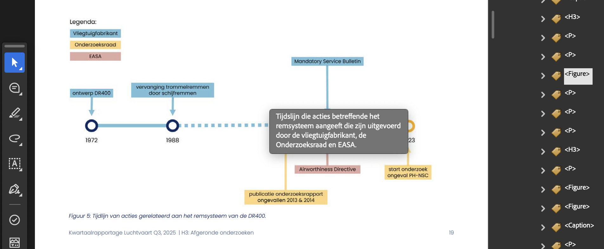
Op pagina 19 staat een complexe afbeelding met een tekstalternatief die niet voldoende beschrijft wat er in de afbeelding te zien is. Zie ook figuur 7 op pagina 21.
Oplossing:
Dit kun je oplossen door informatie uit deze afbeelding als tekst in het document te plaatsen.
Issue nr. 59 - Visuele structuur van tekst komt niet overeen met de structuur in de tags
Impact: MediumType: ContentWCAG: 1.3.1EN: 9.1.3.1
Op de laatste pagina staat een alinea tekst onder het kopje “Foto’s”. De kop en de broodtekst zijn in een h3-tag opgenomen.
Link naar het PDF-document: https://onderzoeksraad.nl/wp-content/uploads/2026/01/neergestort-na-opstijgen-aquila-a211-sint-willebrord.pdf
Issue nr. 60 - Logo heeft geen tekstalternatief
Impact: MediumType: ContentWCAG: 1.1.1EN: 9.1.1.1
In het PDF-document bevat de eerste pagina het logo van de organisatie zonder een tekstalternatief.
Op de laatste pagina staat ook het logo zonder een tekstalternatief.
Oplossing:
Voeg een alternatieve tekst toe aan de Figure-tag van het eerste logo.
Onder het tweede logo op de laatste pagina staat een kopje “Onderzoeksraad”. Als je daar de tekst “ voor veiligheid” aan toevoegt, geef je de lezer die de pagina niet kan zien voldoende informatie.
Issue nr. 61 - Onvoldoende kleurcontrast van tekst
Impact: MediumType: ContentWCAG: 1.4.3EN: 9.1.4.3
Op pagina 5 staat een kopje met een cijfer 1. Het witte cijfer op een lichtgroene achtergrond heeft een contrastverhouding van 2,3:1. Deze tekst is niet goed zichtbaar voor mensen die behoefte hebben aan goed contrast. Dit probleem komt bij alle cijfers voor die in h1-kopjes worden gebruikt.
Link naar de pagina: https://onderzoeksraad.nl/onderzoek/toenemende-drukte-op-de-noordzee/
Issue nr. 62 - Opsomming is niet correct gemarkeerd
Impact: MediumType: ContentWCAG: 1.3.1EN: 9.1.3.1
Onder het kopje “Aanbevelingen” staat een opsomming met 2 punten en een lijst die inhoudelijk genest moet zijn in de eerste lijst. Deze structuur ontbreekt in HTML. In de code zijn dat 3 losse lijsten.
Oplossing:
Pas de lijst aan of verwijder het eerste <ol>-element (punt 1).
Link naar pagina: https://onderzoeksraad.nl/onderzoek/toenemende-drukte-op-de-noordzee/
Issue nr. 63 - Opsomming is niet correct gemarkeerd
Impact: MediumType: ContentWCAG: 1.3.1EN: 9.1.3.1
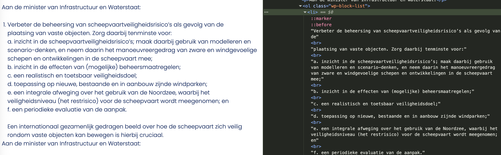
Onder het kopje “Aanbevelingen” staat een opsomming waar punt 1 een geneste lijst heeft. Deze geneste lijst is in de HTML in het eerste <li>-element opgenomen. Een gebruiker van een schermlezer krijgt een andere structuur te horen.
Oplossing:
Plaats de geneste lijst in een apart ul- of ol-element.
Vragen over het rapport?
Heb je vragen over een bevinding? Kopieer de link en stuur deze samen met je vraag naar contact@properaccess.nl. We denken graag met je mee over alternatieve oplossingen.